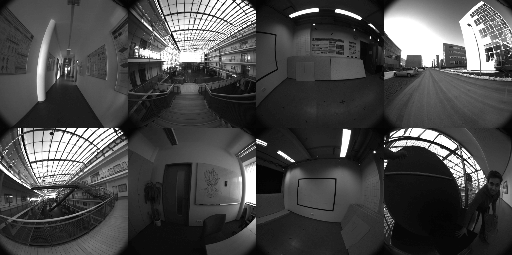

Supported Datasets
Contents
The EuRoC MAV Dataset
The ETH ASL EuRoC MAV dataset [4] is one of the most used datasets in the visual-inertial / simultaneous localization and mapping (SLAM) research literature. The reason for this is the synchronised inertial+camera sensor data and the high quality groundtruth. The dataset contains different sequences of varying difficulty of a Micro Aerial Vehicle (MAV) flying in an indoor room. Monochrome stereo images are collected by a two Aptina MT9V034 global shutter cameras at 20 frames per seconds, while a ADIS16448 MEMS inertial unit provides linear accelerations and angular velocities at a rate of 200 samples per second.
We recommend that most users start testing on this dataset before moving on to the other datasets that our system support or before trying with your own collected data. The machine hall datasets have the MAV being picked up in the beginning and then set down, we normally skip this part, but it should be able to be handled by the filter if SLAM features are enabled. Please take a look at the run_
| Dataset Name | Length (m) | Dataset Link | Groundtruth Traj. | Config |
|---|---|---|---|---|
| Vicon Room 1 01 | 58 | rosbag, rosbag2 | link | config |
| Vicon Room 1 02 | 76 | rosbag , rosbag2 | link | config |
| Vicon Room 1 03 | 79 | rosbag, rosbag2 | link | config |
| Vicon Room 2 01 | 37 | rosbag, rosbag2 | link | config |
| Vicon Room 2 02 | 83 | rosbag, rosbag2 | link | config |
| Vicon Room 2 03 | 86 | rosbag, rosbag2 | link | config |
| Machine Hall 01 | 80 | rosbag, rosbag2 | link | config |
| Machine Hall 02 | 73 | rosbag, rosbag2 | link | config |
| Machine Hall 03 | 131 | rosbag, rosbag2 | link | config |
| Machine Hall 04 | 92 | rosbag, rosbag2 | link | config |
| Machine Hall 05 | 98 | rosbag, rosbag2 | link | config |
TUM Visual-Inertial Dataset
The TUM Visual-Inertial Dataset [39] is a more recent dataset that was presented to provide a way to evaluate state-of-the-art visual inertial odometry approaches. As compared to the EuRoC MAV datasets, this dataset provides photometric calibration of the cameras which has not been available in any other visual-inertal dataset for researchers. Monochrome stereo images are collected by two IDS uEye UI-3241LE-M-GL global shutter cameras at 20 frames per second, while a Bosch BMI160 inertial unit provides linear accelerations and angular velocities at a rate of 200 samples per second. Not all datasets have groundtruth available throughout the entire trajectory as the motion capture system is limited to the starting and ending room. There are quite a few very challenging outdoor handheld datasets which are a challenging direction for research. Note that we focus on the room datasets as full 6 dof pose collection is available over the total trajectory.
RPNG AR Table Dataset
The Indoor AR Table Visual-Inertial Datasets [7] were collected to demonstrate the impact of estimating long-term planar surfaces within a visual-inertial estimator. An Intel Realsense D4553 with 30Hz RGB-D (depth was not used) and 400Hz BMI055 IMU along with 100Hz OptiTrack poses were recorded in 1-2 minute segments. The groundtruth was recovered using the vicon2gt utility [16].

RPNG OpenVINS Dataset
In additional the community maintained datasets, we have also released a few datasets. Please cite the OpenVINS paper if you use any of these datasets in your works. Here are the specifics of the sensors that each dataset uses:
- ArUco Datasets:
- Ironsides Datasets:
Most of these datasets do not have perfect calibration parameters, and some are not time synchronised. Thus, please ensure that you have enabled online calibration of these parameters. Additionally, there is no groundtruth for these datasets, but some do include GPS messages if you wish to compare relative to something.
| Dataset Name | Length (m) | Dataset Link | Groundtruth Traj. | Config |
|---|---|---|---|---|
| ArUco Room 01 | 27 | rosbag | none | config aruco |
| ArUco Room 02 | 93 | rosbag | none | config aruco |
| ArUco Hallway 01 | 190 | rosbag | none | config aruco |
| ArUco Hallway 02 | 105 | rosbag | none | config aruco |
| Neighborhood 01 | 2300 | rosbag | none | config ironsides |
| Neighborhood 02 | 7400 | rosbag | none | config ironsides |
UZH-FPV Drone Racing Dataset
The UZH-FPV Drone Racing Dataset [39] is a dataset focused on high-speed agressive 6dof motion with very high levels of optical flow as compared to other datasets. A FPV drone racing quadrotor has on board a Qualcomm Snapdragon Flight board which can provide inertial measurement and has two 640x480 grayscale global shutter fisheye camera's attached. The groundtruth is collected with a Leica Nova MS60 laser tracker. There are four total sensor configurations and calibration provides including: indoor forward facing stereo, indoor 45 degree stereo, outdoor forward facing, and outdoor 45 degree. A top speed of 12.8 m/s (28 mph) is reached in the indoor scenarios, and 23.4 m/s (54 mphs) is reached in the outdoor datasets. Each of these datasets is picked up in the beginning and then set down, we normally skip this part, but it should be able to be handled by the filter if SLAM features are enabled. Please take a look at the run_

| Dataset Name | Length (m) | Dataset Link | Groundtruth Traj. | Config |
|---|---|---|---|---|
| Indoor 5 | 157 | rosbag | link | config |
| Indoor 6 | 204 | rosbag | link | config |
| Indoor 7 | 314 | rosbag | link | config |
| Indoor 9 | 136 | rosbag | link | config |
| Indoor 10 | 129 | rosbag | link | config |
| Indoor 45deg 2 | 207 | rosbag | link | config |
| Indoor 45deg 4 | 164 | rosbag | link | config |
| Indoor 45deg 12 | 112 | rosbag | link | config |
| Indoor 45deg 13 | 159 | rosbag | link | config |
| Indoor 45deg 14 | 211 | rosbag | link | config |
KAIST Urban Dataset
The KAIST urban dataset [23] is a dataset focus on autonomous driving and localization in challenging complex urban environments. The dataset was collected in Korea with a vehicle equipped with stereo camera pair, 2d SICK LiDARs, 3d Velodyne LiDAR, Xsens IMU, fiber optic gyro (FoG), wheel encoders, and RKT GPS. The camera is 10 Hz, while the Xsens IMU is 100 Hz sensing rate. A groundtruth "baseline" trajectory is also provided which is the resulting output from fusion of the FoG, RKT GPS, and wheel encoders. We provide processing scripts to generate the calibration and groundtruth from the dataset's formats.
We recommend converting the KAIST file format into a ROS bag format. If you are using ROS2 then you should first convert into a ROS1 then convert following the ROS1 to ROS2 Bag Conversion Guide . Follow the instructions on the kaist2bag repository:
git clone https://github.com/irapkaist/irp_sen_msgs.git git clone https://github.com/rpng/kaist2bag.git
You can also try to use the file_
KAIST VIO Dataset
The KAIST VIO dataset [22] is a dataset of a MAV in an indoor 3.15 x 3.60 x 2.50 meter environment which undergoes various trajectory motions. The camera is intel realsense D435i 25 Hz, while the IMU is 100 Hz sensing rate from the pixelhawk 4 unit. A groundtruth "baseline" trajectory is also provided from a OptiTrack Mocap system at 50 Hz, the bag files have the marker body frame to IMU frame already applied. This topic has been provided in ov_data for convenience sake.
| Dataset Name | Length (km) | Dataset Link | Groundtruth Traj. | Example Launch |
|---|---|---|---|---|
| circle | 29.99 | download | link | config |
| circle_fast | 64.15 | download | link | config |
| circle_head | 35.05 | download | link | config |
| infinite | 29.35 | download | link | config |
| infinite_fast | 54.24 | download | link | config |
| infinite_head | 37.45 | download | link | config |
| rotation | 7.82 | download | link | config |
| rotation_fast | 14.55 | download | link | config |
| square | 41.94 | download | link | config |
| square_fast | 44.07 | download | link | config |
| square_head | 50.00 | download | link | config |